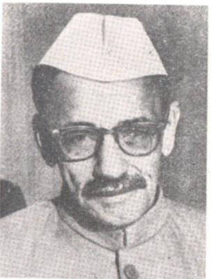
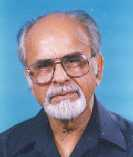

Prime Ministers

Jawaharlal Nehru
Tenure: 1947 - 1964

Gulzarilal Nanda
Tenure: 1964 - 1964, 1966 - 1966

Lal Bahadur Shastri
Tenure: 1964 - 1966

Indira Gandhi
Tenure: 1966 - 1977, 1980 - 1984

Morarji Desai
Tenure: 1977 - 1979

Charan Singh
Tenure: 1979 - 1980

Rajiv Gandhi
Tenure: 1984 - 1989

Vishwanath Pratap Singh
Tenure: 1989 - 1990

Chandra Shekhar
Tenure: 1990 - 1991

P. V. Narasimha Rao
Tenure: 1991 - 1996

Atal Bihari Vajpayee
Tenure: 1996 - 1996, 1998 - 2004

H. D. Deve Gowda
Tenure: 1996 - 1997

I. K. Gujral
Tenure: 1997 - 1998

Manmohan Singh
Tenure: 2004 - 2014

Narendra Modi
Tenure: 2014 - To Date